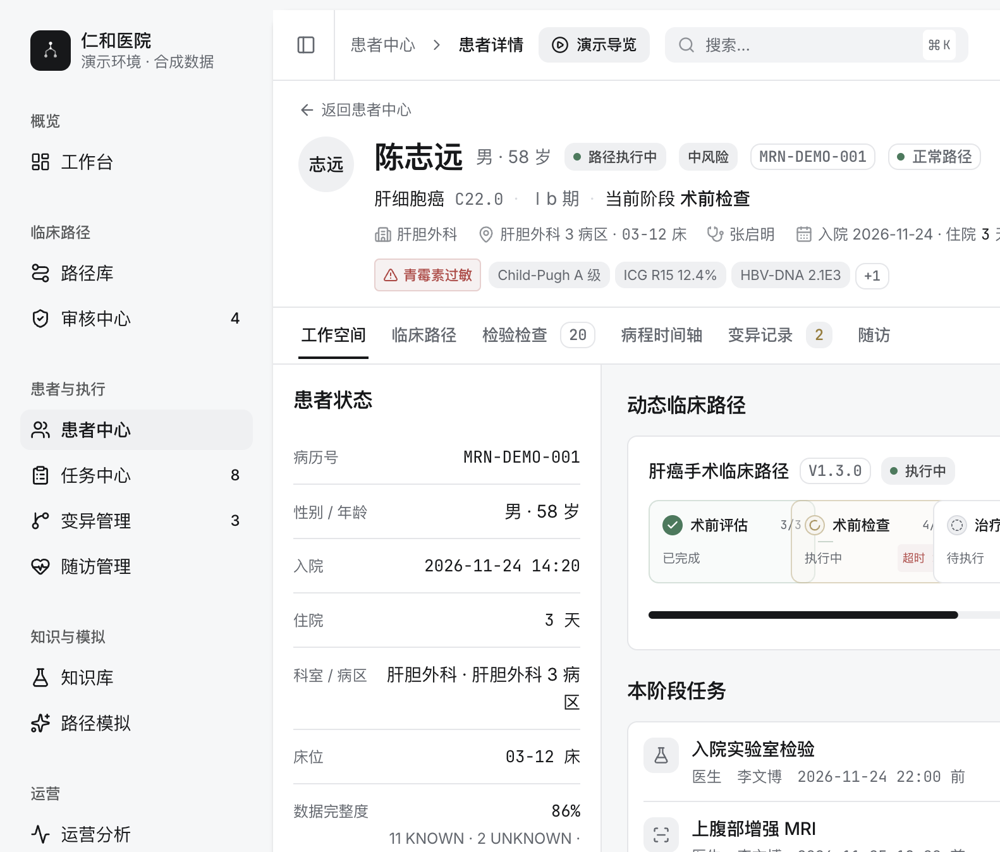
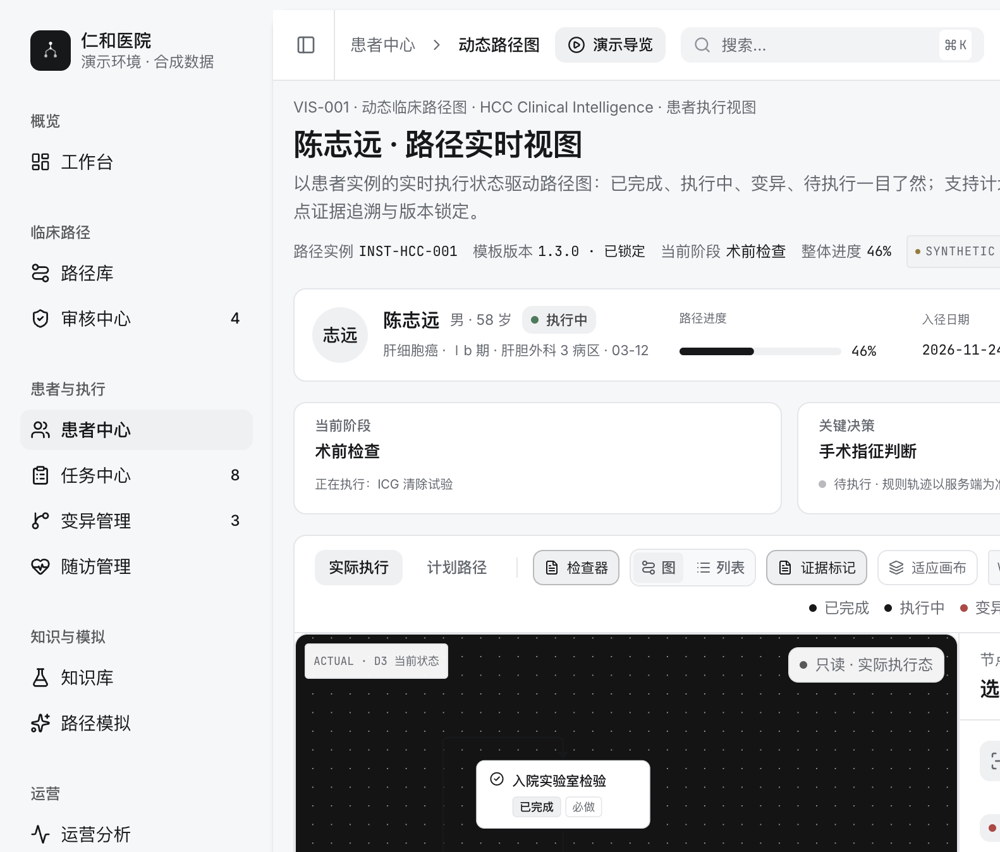
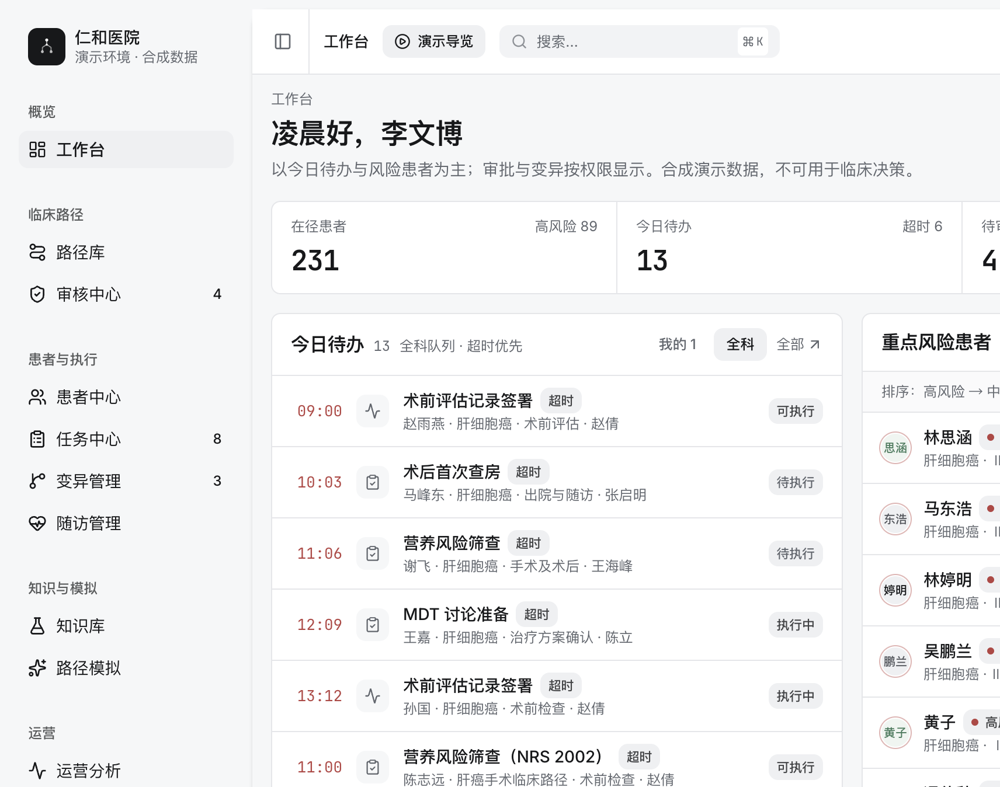

用患者状态模型组织诊断、规划与执行。
合成演示 · 非临床决策依据
以医疗模型为驱动核心，以临床路径为业务承载，以医生审核为安全边界。
患者状态建模、风险与演化估计；世界模型路线逐步接入，形成长期技术壁垒。
把模型与指南编成可审计建议：分期辅助、规则校验、风险提示与循证解释。
把建议落成可审核路径：设计、个体化规划、任务执行、变异分析与随访。
一期以规则与约束规划可运行；预测与世界模型 clinical_use = false，不可替代医生决策。
不替代现有系统，而是将决策与路径组织成闭环。
| 传统临床路径 | 传统 CDSS | 我们的 HCC 平台 | |
|---|---|---|---|
| 做法 | 按标准流程执行 | 辅助当前临床决策 | 面向全病程动态规划 |
| 要点 | 模板 · 任务 · 执行 · 变异 | 规则 · 诊断 · 用药 · 风险 | 专病 CDSS · 状态 · 执行 · 反馈 |
| 核心 | 流程规范化 | 知识与推理 | 知识 + 数据 + 模型 |
| 对象 | 标准流程 | 临床决策点 | 患者连续状态与路径 |
对比为典型能力定位，不是厂商测评；先进产品可能已有部分重叠能力。
HCC 术后康复阶段 · 新检验结果触发医院审核过的异常规则
虚构场景，仅说明产品交互；不构成诊疗建议，实际调整由医生确认。
诊断、分期、肝功能 · 手术风险及可切除性评估
医生审核 · 手术记录、术中事件、病理
指标监测、并发症管理 · 出院评估及随访计划
复查与异常监测 · 复发评估及再治疗转介
标准路径由医院专家审核；系统不自主决定治疗或下达医嘱。
可视化模板 · 节点规则与时间约束 · 版本审批发布后不可变
结构化状态 · 分期辅助、规则校验、循证依据
三值入径 · 条件分支与任务依赖 · 医生审核后激活 · 变异重规划
路径图、时间轴、指标趋势 · 随访任务与人工接管
第一期为规则驱动的可运行工具；预测模型通过标准接口逐步接入。


合成演示数据 · 展示交互与信息结构，不代表临床验证。

V0.6.1 · SYNTHETIC DEMO
每个建议都可解释、可拒绝、可追溯——而不是「模型多聪明」。
HCC-CIP 仍为研发演示；临床签署、真实数据合规与生产验证为独立门槛。
标准化、执行可追踪、变异可分析、质量指标可核查。
减少信息查找负担，辅助评估与规划，保留最终决策权。
专病数据集、知识规则、状态模型与持续验证体系。
临床价值需真实试点验证，不预先承诺疗效、费用或住院日改善。
治疗类型与病例数 · 纵向记录、影像、病理、随访结局
医院专家参与 · 确认入径条件、节点、规则及审核流程
HIS / EMR / LIS · 角色、权限、审计与验收
权限、审计、脱敏 · 伦理合规、医生审核、模型验证
一个病种、一条核心路径、一套高质量数据集——先做深，再扩展。
对外演示可在此停住。技术合作或研发评审，继续附录 A–F。
按 → 或空格进入附录 · F 全屏
任务 · 风险 · 路径进度
模板 · 版本 · 审批发布
质量指标 · 变异分析
路径设计 · 个体化规划 · 路径执行 · 路径挖掘 · 变异分析 · 病程可视化
知识检索与推理 · 分期辅助 · 规则与安全校验 · 循证支持 · 风险预警
多模态状态建模 · 状态转移与预测 · 多路径推演 · 不确定性评估
多模态治理 · 高质量数据集
医学本体 · 指南、规则与证据
专病训练 · 评估与部署
数据源：EMR · LIS · CT/MRI · 病理 · 治疗 · 随访。治理：医生审核 · 循证追溯 · 模型验证 · 数据反馈。
病历、检验、CT/MRI · 统一索引与单位
治疗事件、手术、病理 · 结局标签
复查、复发、生存 · 观察窗口及删失
活动、时间、病例标识 · 流程挖掘
模型更新必须离线验证、专家审核、版本发布。最常见历史路径 ≠ 最优路径。
LLM 用于抽取与解释；硬性安全规则由确定性引擎执行，缺失进入人工复核。
每条建议绑定指南版本与证据
禁忌、缺失值、冲突规则拦截
确认后才进入正式路径
规则仍需临床专家确认后方可进入试点。
TRUE / FALSE / UNKNOWN 由冻结规则上下文判定；未知不默认 FALSE
不生成可执行任务，画布虚线弱化；决策轨迹保留
记录快照、规则版本、边、结果与原因，确定性重放
execution_fingerprint 绑定审批；trace 篡改返回 409
V0.6.1 · PATHWAY ENGINE
患者状态 + 临床知识 + 医生确认目标 → Pathway Planner → 候选路径 A/B → 人工审核（确认 / 修改 / 拒绝）。
从当前状态预测未来状态。目标：概率状态转移与不确定性估计；真实治疗因果效果需独立验证。
预测驱动的多路径优化属后续研究，不自动下达医嘱；clinical_use = false。
AUROC / AUPRC / 灵敏度
C-index / 时间依赖 AUC
Brier score / 校准曲线
以上为验证方法论，非本演示性能宣称。须完成授权、患者级划分、时间外验证、校准与专家评审后方可试点。